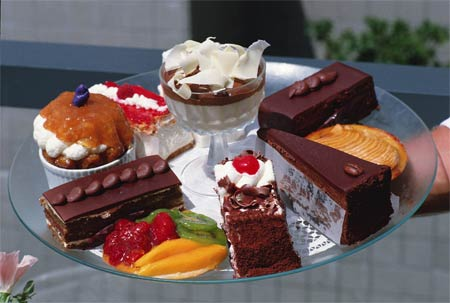

Deserturi englezesti
Diferite țări ale lumii își prezintă bucatele. Se întâmplă adesea ca compoziția acestor feluri de mâncare să includă produse care ne sunt complet străine. Majoritatea oamenilor preferă preparate familiare decât ceva nou.

În ceea ce privește bucătăria engleză și, în special, deserturile englezești, acestea au și propriile lor caracteristici. Un desert celebru în engleză este un triffle, care este o prăjitură înmuiată în suc de fructe, vin, lichior, precum și diverse jeleuri, creme, bezea și alte dulciuri. Toate componentele sunt zdrobite în bucăți mici și alternate într-un bol, rezultând un desert delicat cu mai multe straturi. Un astfel de desert este foarte simplu de preparat, chiar și numele în sine în traducere înseamnă „fleac”, „fleac”.
Dacă doriți să faceți plăcere celor dragi și să gătiți rapid ceva dulce, atunci ar trebui să încercați acest minunat desert englezesc. Trebuie doar să vă alimentați cu produsele necesare, care sunt diferite pentru fiecare gospodină și să lăsați deoparte zece minute pentru a găti. Încercați deserturi englezești cu un gust de neuitat.